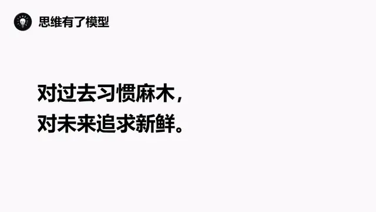
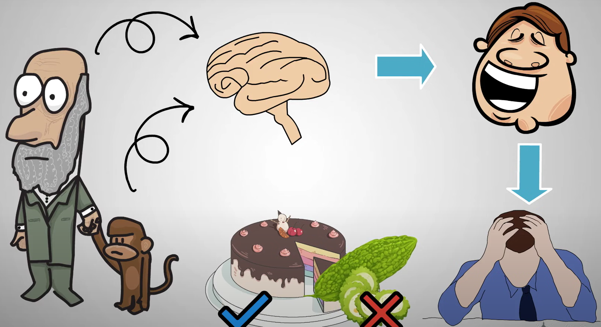
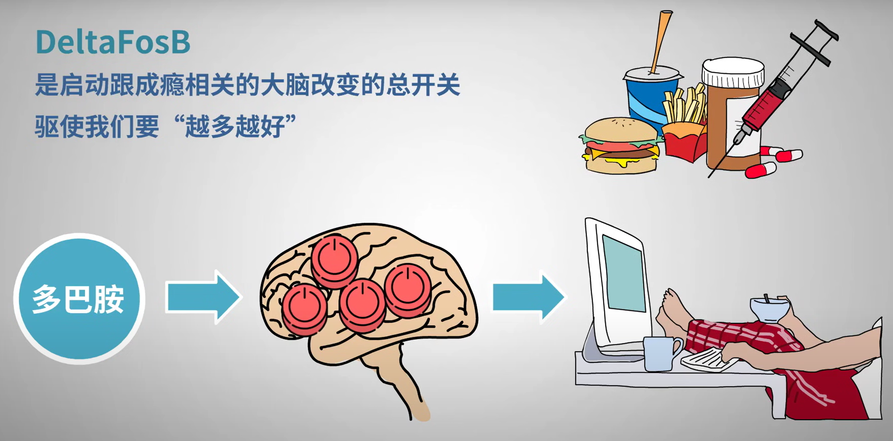
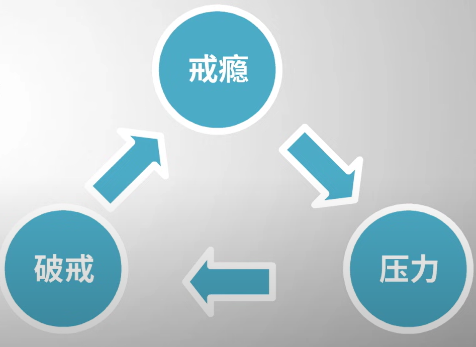
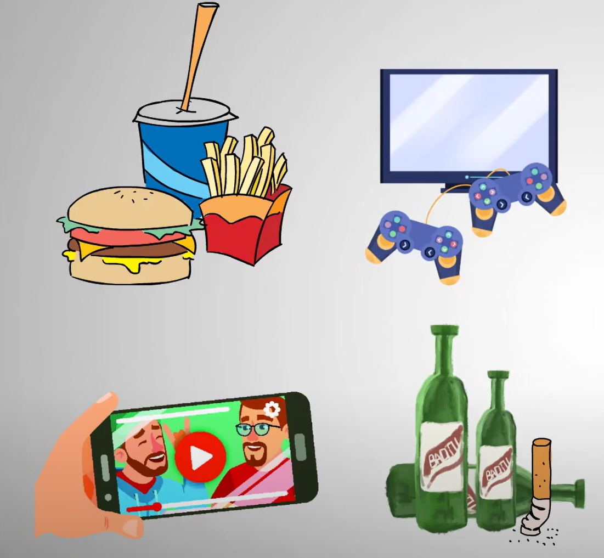
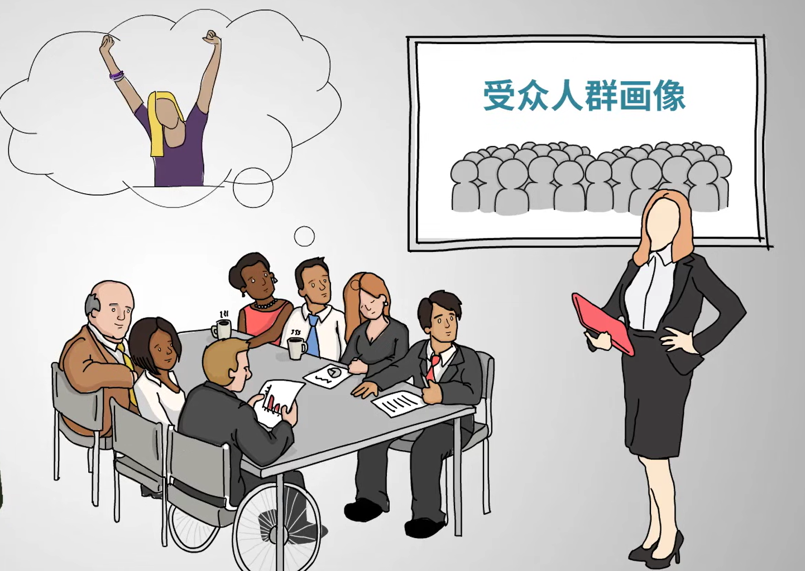
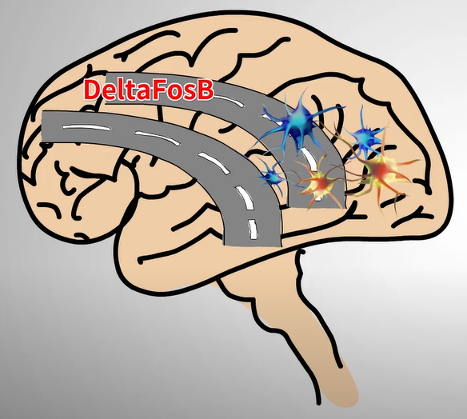
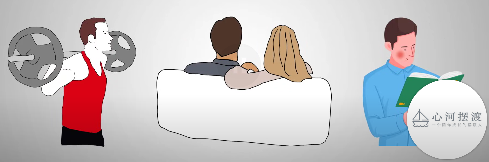

心理学：成瘾机制
1 柯立芝效应
研究发现，大多数哺乳动物在交媾之后的一段时间内，即使原有的配偶就在身边，也不再有性行为，这个阶段称为性不应期。但是，如果在雄性动物交媾之后，重新给它一个新的雌性发情对象，它的不应期会大大缩短，甚至立即又出现交媾行为。
这种动物对新异性所显示的效应，在心理学上就被叫做柯立芝效应。
对同一件事我们会很快就习惯了，并逐渐变得麻木。我把它提炼成一个思维模型，叫做习惯麻木。同时，我们又在不断的追求新鲜感，追求新的刺激。我把它提炼成一个思维模型，叫做追求新鲜。

对于同一件事情，我们每重复一次，阈值就会提高一点，需要更高的刺激才能达到跟原来一样的感觉。
2 成瘾机制

对于人类和其他哺乳类动物来讲，欲望和动机都来自一种叫做多巴胺的神经化合物。多巴胺让人脑中的奖赏机制活跃起来，让人类产生快感，它也是人们上瘾的原因，所以被称为成瘾分子。
但是多巴胺并不是一个坏东西，多巴胺可以促使你做一切有利于你的基因延续的事情，
新的事物可以刺激多巴胺，这也是为什么网络上的一些内容会刺激奖赏机制。因为鼠标一点，新的画面就出现了，随着多个同时打开的页面和无数的浏览，当一个大脑面对着它从未进化到可以处理超量的刺激的时候，那种感觉就像是在大脑里放烟花一样，不上瘾才怪。

2.1 敏化反应
多巴胺刺激导致DeltaFosB生产过剩，和神经细胞之间的联系加强，练习越多就越容易做，最后变成无意识的思想和习惯。
2.2 脱敏反应
多巴胺不断泵出的时候，接收细胞就会发生紊乱，减少多巴胺受体的释放。
2.3 脑前额叶功能退化
脑前额叶灰质和白质的改变，使成瘾者控制冲动和预知后果能力降低。在放纵和自责之间来回拉扯，更严重的可能会做出一些不好的事情。
2.4 压力失常
戒瘾本来就会带来压力，而压力容易导致成瘾者破戒，形成一个死循环。很多人把压力当作放纵自己的借口，其实不是借口，是真的。

3 哪些东西容易成瘾？
神经学专家提出了一个4C模型，符合这个模型的过程其实都可以叫做成瘾。
- compulsion（强迫）
- continue（持续）
- control（无法控制）
- craving（渴望，心理或生理上的依赖）
生活中有许多可能会让人成瘾的内容需要注意，比如垃圾食品、游戏、短视频和烟酒等等。而且这些更有潜力让人上瘾，因为你做这些事儿没人会管你。只要条件允许，你可以随时随地获取。

游戏和短视频的问题可能会越来越严重，因为设计这些App的技术团队已经不只是研究产品，而是开始研究受众的心理。他们会揣摩用户什么时候会受刺激，什么时候会产生满足感。

4 怎样才能成功戒瘾？
从神经学角度来看，成瘾是因为DeltaFosB与神经细胞之间的联系加强，久而久之，在大脑中形成一条敏化的路，走这条路很爽。戒瘾就需要我们重启大脑，用其他路取代这条成瘾的路。

什么东西可以刺激多巴胺让其他路产生敏化反应呢？
- 希望
- 挑战
- 奖赏
4.1 希望
在心里有压力的时候，只要心里有明确的目标和希望，就会刺激多巴胺的分泌，也就是创造幸福感和动力。所以希望是戒瘾的前提，除了可以直接刺激多巴胺的分泌外，也会产生一种稀缺状态，精力、意识和时间都投入到自己的目标中。
4.2 挑战
游戏能让你上瘾的原因之一就是因为难度越来越高，挑战之后的满足感也越来越强烈。我们只是在用经验、习惯和潜在认值在处理简单的事情，这也是我们觉得生活没有乐趣的原因之一。
当我们把游戏心态应用到生活当中，你会发现生活就像打怪升级一样，挑战自己原定一个小时完成的工作，在40分钟内完成。
4.3 奖赏
4.3.1 克服时间贴现
想象目标完成之后的收获，这会欺骗你的大脑，它会误认为你已经成功了，并且分泌多巴胺。
4.3.2 发现容易忽视的奖赏
比如减肥，体重秤上数字的减少就是奖赏，看书不经意间悟出的道理就是奖赏。你关注的点不同，就会有不同的感受，这也是为什么有些人积极乐观，有些人郁郁寡欢。
5 总结
戒瘾难吗？戒瘾很难，但刚好也是一种挑战，而且很多人已经通过不同的方法挑战成功，不再被成瘾物挟持，恢复了正常的生活

所以，只要你想，你也可以！
 微信
微信 支付宝
支付宝